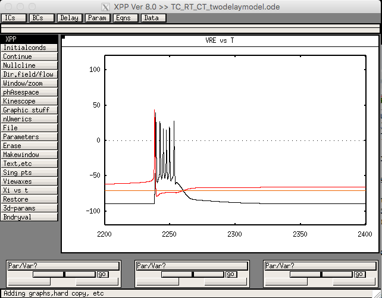

The XPPAUT code for the paper:
Y.Liu, J. Milton and S.A. Campbell (2019)
Outgrowing seizures in Childhood Absence Epilepsy: time delays and bistability
Journal of Computational Neuroscience,
doi:10.1007/s10827-019-00711-x.
Details on installing XPPAUT can be found on
Bard Ermentrout's XPPAUT webpage.
To reproduce figures in paper, all parameters can be left at default
values: (Initialconds -> Go)
except as follows.
- Figure 2: (use Parameters menu, type variable name, value) (type escape key "esc" when done/ready to run the model) gd_AMPA=0,ge_AMPA=0.
- Left: Itc_ext_c=5;
Right: Itc_ext_c=6 Top gb_GABAA=0.6;
-
Bottom: gb_GABAA=0.1
-
Middle gb_GABAA=0.3;
- 
- Figure 3: gd_AMPA=0,ge_AMPA=0.
- Itc_ext_c=5, Itc_pert=1.5, ontime=2000, offtime=2500
- Left gb_GABAA=0.1; Middle gb_GABAA=0.4; Right: gb_GABAA=0.7
- Figure 4: Itc_ext=5, tau1=9, tau2=2.8
- Top left gb_GABAA=0.6; Top right gb_GABAA=0.1;
- Bottom left: gb_GABAA=0.29; Bottom right: gb_GABAA=0.2;
- Figure 5: Itc_ext_c=5, tau2=2.8
- Left gb_GABAA=0.6, tau1=4.2
- Right gb_GABAA=0.5, tau1=8.4
- Figure 6: Itc_ext_c=5, tau2=2.8, Itc_pert=1, ontime=2000, offtime=2300
- Left gb_GABAA=0.7; Right: gb_GABAA=0.4
- Top tau1=8.4; Bottom: tau1=2.8
To modify the initial conditions for Figure 6 as described on page 7
of the paper, use the "delay ICs" window in XPPAUT.